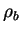
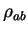

Here it is possible to integrate the density over one or several spheres of different radii. The point is that the notion of atomic charge is no well defined. To get around it, e.g. in order to analyse charge transfer during atomic adsorption, one can calculate the charge of the atom in spheres of several different radii for both situations (before and after adsorption) and then compare the curves.
Here it is possible to plot one curve at a time. The comparison can be made separately. You should keel track of the data files produced, may be rename them for convenience, and then plot them together using other means. Note that, if you intend to use GNUPLOT, you may benefit from the test.gnu file, produced by tetr for the plotting, and edit it appropriately.
The charge menu looks like this:
..............MENU for CHARGE ........................
......... Change these parameters if necessary:.......
2. The number of (possibly) overlaping spheres: 1
3. The center(s) of your sphere(s):
[1] A=> ( 0.000, 0.000, 0.000), fr=> ( 0.000, 0.000, 0.000)
4. The smallest radius (Angstroms): 0.00000
5. The largest radius (Angstroms): 0.00000
6. The number of points between these radii: ... undefined ...
7. Algorithm for the charge integration: <conserving>
8. X,Y,Z integration grid inside the sphere: IRRELEVANT
9. Perform calculation for the plotting: file out.dat_2
10. Preview the dependence of charge versus Radius
11. Create a PostScript file out.dat_2.ps
---- G e n e r a l s e t t i n g s -----
An. Coordinates are specified in: <Angstroms>
Ne. Representation of results: through number of electrons
Co. Show current atomic positions in fractional/Cartesian
--- L e a v e t h e m e n u -------
Q. Return to the previous menu
---> Choose the item and press ENTER:
The number of spheres (up to five3.8) is specified in 2, their centres in 3, the range of radii in 4 and 5, and the number of points between them - in 6. The integration alsgorithm (see Section 3.5) is chosen in 7 and 8 (the latter is about the fine grid to be used and is only needed for the nonconserving method). The calculation is performed in 9 with the data file name as shown, and can be previewed in 10; the Postscript file (as indicated) is produced in 11. The three setting options allow you to choose how points in space are specified (An) and in which units (via the number of electrons or as a % of the total electron charge in the cell) the integrated charge is shown (Ne); in addition, you can preview atomic positions using Co.
If there are more than one sphere, the menu changes. In the example below three spheres were chosen:
..............MENU for CHARGE ........................
......... Change these parameters if necessary:.......
2. The number of (possibly) overlaping spheres: 3
3. The center(s) of your sphere(s):
[1] A=> ( 0.000, 0.000, -0.066), fr=> ( 0.000, 0.000, -0.013)
[2] A=> ( 0.761, 0.000, 0.526), fr=> ( 0.152, 0.000, 0.105)
[3] A=> ( -0.761, 0.000, 0.526), fr=> ( -0.152, 0.000, 0.105)
4. The smallest radius (Angstroms): 0.00000
5. The largest radius (Angstroms): 2.00000
55. Shrinking factors: 1.000 1.100 0.900
6. The number of points between these radii: 10
7. Algorithm for the charge integration: <nonconserv>
8. X,Y,Z integration grid inside the sphere: 30
9. Perform calculation for the plotting: file out.dat_2
10. Preview the dependence of charge versus Radius
11. Create a PostScript file out.dat_2.ps
---- G e n e r a l s e t t i n g s -----
An. Coordinates are specified in: <AtomNumber>
Ne. Representation of results: through number of electrons
Co. Show current atomic positions in fractional/Cartesian
--- L e a v e t h e m e n u -------
Q. Return to the previous menu
---> Choose the item and press ENTER:
To control the radii of different spheres in this case, you can specify
``Shrinking factors'' for every sphere in option 55
that opens if the number of spheres is larger than 1. To be precise,
the radius of the sphere  is calculated as
is calculated as

, where
is the shrinking factor for this sphere. At first, spheres may not overlap, but, as the radiusThere is also one more facility that might be sometimes useful. When the calculation has been performed by 9, two new options appear:
9. Perform calculation for the plotting: file out.dat_2 <= DONE!
98. Number of electrons to fit the sphere in: 1.00000
99. Obtain the radius for the given # of electrons:
It is a ``charge calculator'': you can choose the number
of electrons in 98 and then obtain (by 99) the corresponding
radius of the sphere that fits exactly this amount. This is done by
linearly interpolating the calculated curve. In the case of many spheres,
the common radius  will be given.
will be given.
The file names produced within this option are the same as in the case of 1D, Section 3.6.3.2, and 2D, Section 3.6.3.3, plots. The number in the files names correspond to the ``NUMBER OF THE CURRENT PLOT:'' in the parent menu, Section 3.6.3.1.